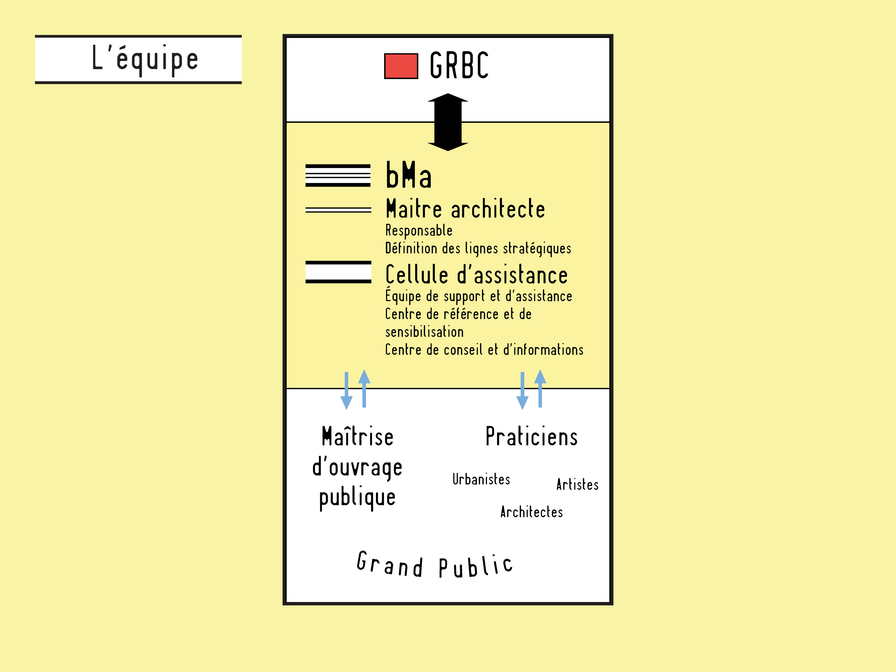
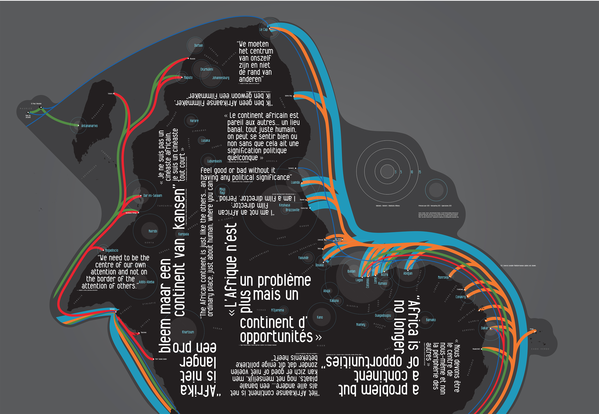
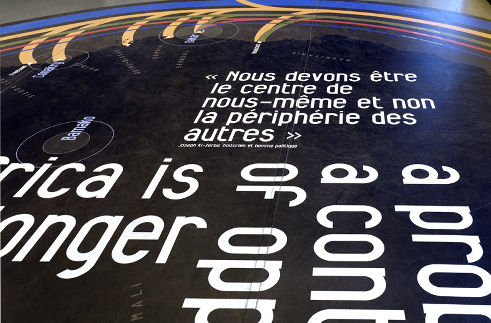
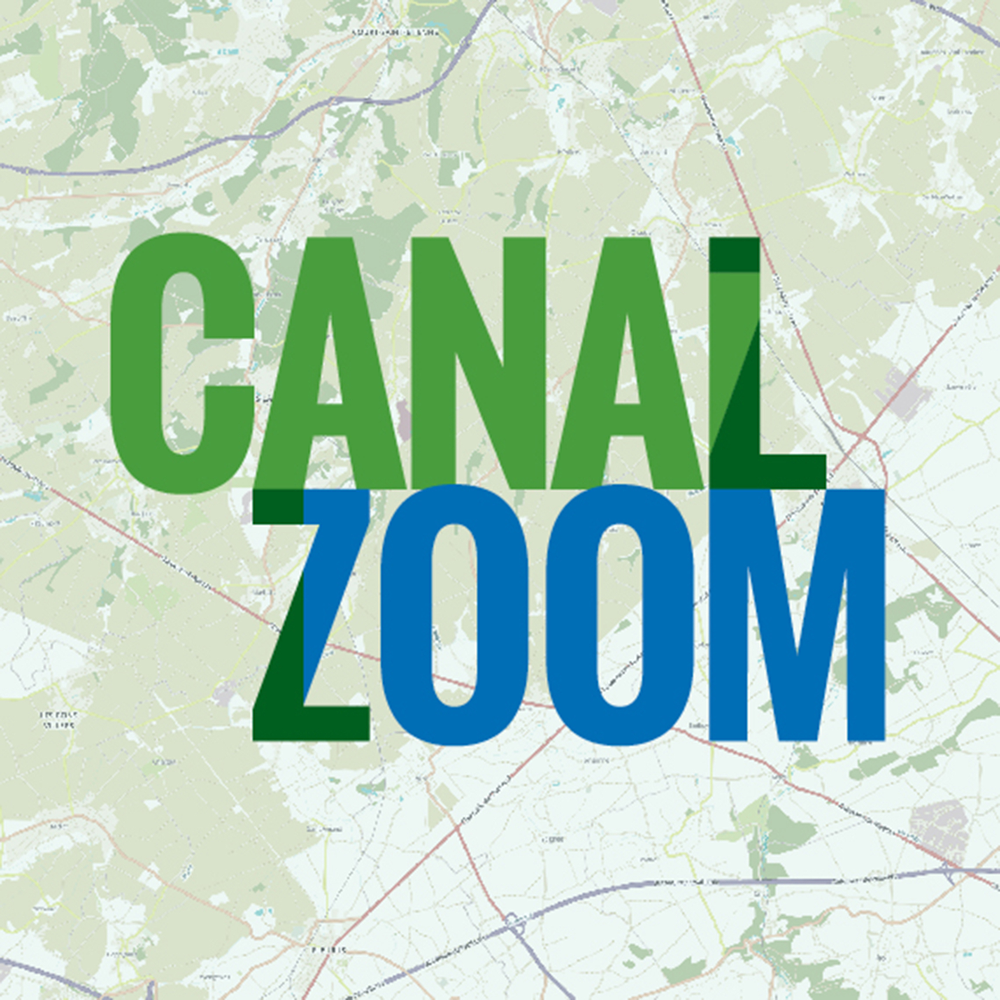

Bouwmeester Brussels
Sur le site internet, les différentes perceptions du territoire de la région-ville mis en évidence par un usage décalé de la traditionnelle et commerciale carte routière.
L'usage de la carte à des échelles différentes bouleverse sa lecture habituelle et questionne les a priori qu’elle véhicule.
Mise en relation avec des représentations plus institutionnelles de la cartographie de la Région.
La symbolique cartographique appliquée à un autre type de schématique.

La symbolique cartographique appliquée à un autre type de schématique.
La symbolique cartographique appliquée à un autre type de schématique.
La carte De Rouck qui a impregné de ses couleurs et typographies l'imaginaire spatial bruxellois depuis la seconde guerre mondiale.
La même zone utilisant la symbolique du bMa.
Le Maître architecte commence son travail en 2010 sur un territoire peu enclin au questionnement qu’il propose. La proposition cartographique de la mission vise à rendre visible son travail d’interface fin entre les différents acteurs bruxellois. La reprise des codes visuels de la carte routière De Rouck, institution classique bruxelloise, met en évidence les contrastes entre plan (petite échelle) et carte (grande échelle).
Walk in Brussels
Notre proposition originale est basée sur un réseau très dense d'écussons signalétiques à destination principalement des piétons.
La trame d'écussons sera calculée en partie algorythmiquement selon une large gamme de critères.
La maille d'écusson est complétée par un réseau de cartes et une application de guidage sur téléphone mobile.
Les cartes sont calibrées sur une distance piétonne et cyclable.
Le système graphique des écussons s'inspire de celui d'une bande dessinée légendaire en Belgique.
Pour comprendre la ville, on a besoin de vision. Les communes d’Anderlecht, Molenbeek-Saint-Jean, d’Etterbeek et de Saint Gilles se sont réunies autour d’un projet de signalétique urbaine et commerciale commun. Cette charte signalétique commerciale et urbaine rend compte d’une signalétique des lieux, des sites, des services, des quartiers commerciaux et toute autre information.
Citadelle de Namur
Le principe scénographique implique toutes sortes de proportions différentes.
Adapter la ligne de côte flamande, différente il y a plusieurs siècles par rapport à l'époque actuelle.
La très intense division du territoire au Moyen-Âge.
Différentes couches urbaines.
Différentes couches urbaines.
Animation venant en parallèle d'une bande son à propos de l'exode urbaine.
Cartographie d'avant les continents actuels!
La cartographie historique et pédagogique pour le nouveau centre du visiteur de la Citadelle de Namur nécessitait de s'adapter à une charge graphique pré-existante. En parallèle, nous avons développé en parallèle des codes visuels fonctionnant sur des cartes issues d'origines dégradées très diverses, converties vers une cartographie entièrement cohérente. GIS.
Commune d'Anderlecht
La signalétique autoroutière publique utilisée ici à une autre échelle.
La première phase de diagnostic et d’audit a été réalisée en collaboration avec les habitants de la commune d’une part et les employés communaux d’autre part, par la mise en évidence de leur expertise et de leurs besoins.
La phase de conception du nouveau système a donné naissance à un kit signalétique qui permet de s’intégrer dans la complexité, l’hétérogénéité des lieux.
Une famille de supports en tôle pliée se déploie à des endroits définis sur les différents sites.
Les informations, imprimées sur papier aimanté, peuvent être générées au sein de la commune.
La gestion se fait en interne dans un cadre contrôlé via des gabarits disponibles sur l’intranet communal, mettant fin à la prolifération abusive des A4 imprimés et collés sur chaque mur.
Ce nouveau système répond aux besoins de modularité et d’autonomie de mise à jour de la commune.
Processus de conception et d’amélioration de la signalétique intérieure et extérieure des bâtiments communaux à Anderlecht.
L’étude a conclu sur une charte signalétique, un cahier des charges techniques et des plans.graphique et plans techniques), des plans d’implantation et un budget estimatif.
Plan de mobilité Bruxelles
Deux publications longues présentant l'état des lieux et le projet du plan régional des déplacements à Bruxelles. De très nombreuses cartes et chiffres d'origines très variées sont à présenter de manière cohérente.
Africa Fast Forward
Une carte au 1/1000000, capable de montrer à la fois la grande échelle et la morphologie des villes.
La typonymie tournée à 180° vers l'Europe.
Avec l'
ancienne police typographique de signalétique routière belge.
Une ligne du temps des systèmes politiques en Afrique.
Les ressources géologiques en taille 1/1.
Et l'autre côté du décor, l'Afrique prospective.

Les cables sous-marins qui irrigent l'Afrique connectée.

Les cables sous-marins qui irrigent l'Afrique connectée.
Les cables sous-marins qui irrigent l'Afrique connectée.
Dans la boule, une vue concave sur des réalités complexes.
Un dépliement urbain à l'intérieur du Musée de la muséïfication coloniale.
À l'Atomium et au Musée de Tervuren, une exposition comme un prototype d'exposition, destinée à être montrée en Afrique comment on montre l'Afrique en Europe... Une Afrique retournée pour montrer un point de vue depuis l'Europe, un Afrique double avec sa version géologique et sa version prospective.
Architecture moderniste à Bruxelles
70x70cm, échelle 1/14500.
Le verso présente cinq index différentes et deux lignes du temps.
La matérialité particulière du Tyvek.
La matérialité particulière du Tyvek.
La matérialité particulière du Tyvek.
Une carte qui condense 400 projets architecturaux des 60 dernières années, nombreux bâtiments principalement modernistes présents dans les 16x16km de la Région bruxelloise. Le premier tirage rapidement épuisé.
Brussels Art Days
Les petits agendas des Brussels Art Days donnent à lire comme une cartographie personnelle annotée de la trentaine de galeries bruxelloises.
Pont de Luttre
Le manuel de revitalisation se présente comme un mode d’emploi très pratique et concret, insistant sur des processus simples et clairs.
L’étude a fourni une charte signalétique, des tracts, un rapport avec des plans d’implantations.
Programmes en élaboration sur le terrain.
Pour la communication de ce contrat de quartier d’une échelle relativement réduite, nous avons opté pour une communication qui met en scène des éléments graphiques du quotidien qu’on peut trouver dans le quartier. Ainsi si la typographie
Crickx est dessinée initialement à Schaerbeek, on la trouve en grand nombre dans cette zone. Les panneaux présentant de grandes flèches pointent aussi l’ici, la proximité directe et induisent un rapport direct avec les habitants du quartier.
Marches exploratoires
La publication-outil prend en compte l’épaisseur temporelle de ces espaces tout en adoptant une approche de genre.
La publication-outil prend en compte l’épaisseur temporelle de ces espaces tout en adoptant une approche de genre.
Femmes et hommes partagent-ils un même «vécu» des espaces?
Femmes et hommes partagent-ils un même «vécu» des espaces?
Quels sont les processus qui font que l’espace se construit aussi, au quotidien, sur des rapports sociaux de sexe?
Quels sont les processus qui font que l’espace se construit aussi, au quotidien, sur des rapports sociaux de sexe?
Ces informations sont ensuite relayée aux acteurs politiques pour nourrir la prise de décision.
Ces informations sont ensuite relayée aux acteurs politiques pour nourrir la prise de décision.
Recherche-action financée par la Politique des Grandes Villes concernant l’élaboration d’un cahier méthodologique permettant la mise en place de marches exploratoires en ville. Menées par un groupe de citadins à travers des espaces urbains qui leur sont familiers, ceux-ci produisent une connaissance collective et négociée sur leurs pratiques quotidiennes de ces espaces. La publication-outil leur permet d’éclairer leurs manières d’occuper ou non ces espaces, de se les figurer.
Langue schaerbeekoise
L’arabe, le turc, le berbère, le néerlandais, le bruxellois, le swahili, l’espagnol, le polonais ne sont qu’une sélection de la variété de langues qui assaisonnent le français, la langue courante du quartier.
Zoom sur carte, les mots remplacent les noms de rue.
Zoom sur carte, les mots remplacent les noms de rue.
Zoom sur carte, les mots remplacent les noms de rue.
Zoom sur carte, les mots remplacent les noms de rue.
La Langue Schaerbeekoise récolte les mots utilisés par les différents groupes de population autour de la Cage aux Ours, à Bruxelles. Le projet veut favoriser la cohésion sociale entre différentes communautés tout en réflectant la richesse linguistique présente autour de la Cage aux Ours.
Eurostation
Comment les gares ont façonné la structure urbanistique de la plupart des villes belges, et comment ce moteur de développement peut être remis en action.
Towards
Towards est une tentative de représentations subjectives du territoire de Bruxelles couplée à la création d’un outil collaboratif de cartographie subjective. Explorer des questions relatives à la représentation subjective du territoire bruxellois et favoriser la transmission, l’échange et la mise en commun de ces questionnements.
Kunstenfestivaldesarts
L'avant-programme de l'édition 1998 du KunstenFestivaldesArts répond à la volonté de sa directrice Frie Leysen de concrétiser un saut d'échelle entre Bruxelles et le monde.
David Evrard - Spirit of Ecstasy
«Spirit of Ecstasy est un roman où tout est raconté comme un long trip d'acide où se mélangent les lieux, les époques, les personnages, les choses rêvées et les choses vécues, et où les gens se réveillent simplement pour aller voir le lever du soleil. [...] Il y a de la fumée, des formes géométriques planantes, de la danse, du sexe, et du rythme. Des uppercuts et des swings. Il est difficile de renouer avec la chronologie, et on aurait presque besoin d'une carte pour s'y retrouver.» Jill Gasparina à propos du premier roman de David Evrard.
La sélec
Conçue à partir d'un corpus de musique et de films, une collecte hallucinées de mots et la manière dont ils s'articulent avec la ville.
Vincent Meessen
Travelogue
Cette carte et publication présentent les résultats du projet de Travelogue, recherche expérimentale qui a l'intention de cartographier la collecte de données sur la mobilité internationale des arts de la scène en Europe et tester si la mobilité actuelle des efforts de cartographie peuvent être harmonisés et reliés afin de fournir une meilleure vue de la mobilité transnationale.
Service Public Fédéral Mobilité et Transports
Le Service Public Fédéral Mobilité et Transports occupe un bâtiment de 20.000m2 situé à deux pas de la gare du Nord qui a été choisi par l'Administration fédérale belge pour une réorganisation-test de leur bâtiment selon les principes du ‘dynamic office’, une approche destinée en cas de succès à être généralisée à l’ensemble des services publics. Cette réorganisation a été appuyée par une signalétique d’identité basée sur la cartographie et ses symboles, unificatrice des quatre différents services du SPF. Elle a été concrétisée par des vinyles sur les noyaux, des plans de repérage sur les vestiaires et une série de cadres et de bacs lumineux.
Vincent Meessen
Cet ouvrage est l’aboutissement d’un travail d’échange et de collecte visuelle. Une trentaine de jeunes Burkinabés vivant en rue à Ouagadougou, capitale du Burkina Faso, s’y confient en parole et surtout, prennent les appareils photo. Il en émane un étonnant autoportrait de groupe, à contre-courant des représentations convenues des enfants des rues. Car ce qui caractérise ces jeunes, au-delà de leur détresse et de la précarité qu’ils affrontent au quotidien, c’est leur volonté de tirer parti, avec intelligence et lucidité, de la réalité urbaine pour s’inventer et se construire en tant qu’individus.
Divers travaux intimes
Faire part mariage Amandine et Vincent
Faire part naissance Emma
Faire part naissance Louve
Faire part mariage Anne-Sophie et Antoine
Faire part naissance Louise
Invitation 60 ans Kathy, 154 versions différentes
Schémas
Identité et site internet Dimitri Coppe
Identité Dame de Pic, 2009→2015
Festival Kanal, identité, publication et site internet, 2010

Canal zoom identité - 2014